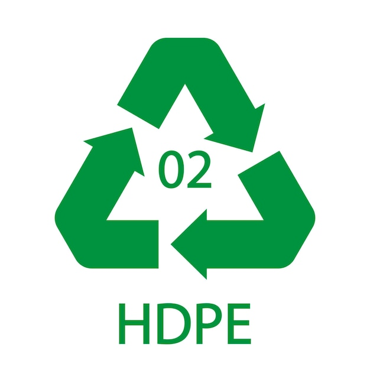

POLIETILENO DE ALTA DENSIDAD

El polietileno de alta densidad (HDPE, PEHD o PEAD) es un polímero termoplástico producido a partir del monómero etileno. A veces se le llama "alcateno" o "polietileno" cuando se usa para tuberías de HDPE.1?2? Con una alta relación resistencia-densidad, el HDPE se utiliza en la producción de botellas de plástico, tuberías resistentes a la corrosión, geomembranas y madera plástica. El HDPE se recicla comúnmente y tiene el número "2" como código de identificación de la resina. A diferencia del LDPE, que es más flexible por la presencia de ramificaciones de hasta cuatro carbonos, el HDPE es más rígido por no tener cadenas laterales.3?
El HDPE es un material ideal para aplicaciones al aire libre, ya que es resistente al sol, al granizo, a la lluvia ácida y a las tormentas. Es inmune al moho, la descomposición y las infestaciones de insectos.